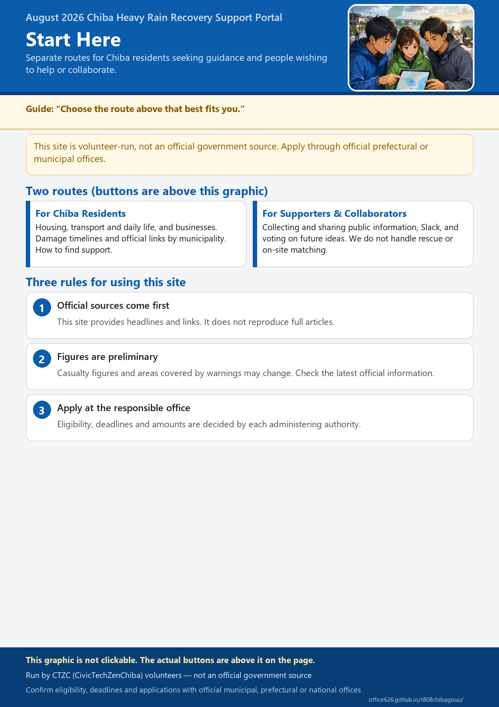

August 2026 Chiba Heavy Rain Recovery Support Portal
This website is run by CTZC volunteers and is not an official government publication. Apply and make inquiries through the official Chiba Prefecture or municipal contact points. Always check official websites for the latest information.
For Chiba Residents
See how the disaster is developing, what may happen next, and information on housing, travel, businesses, and support programs
For Supporters and Partners
Share information and take part through Slack, voting, and action items
